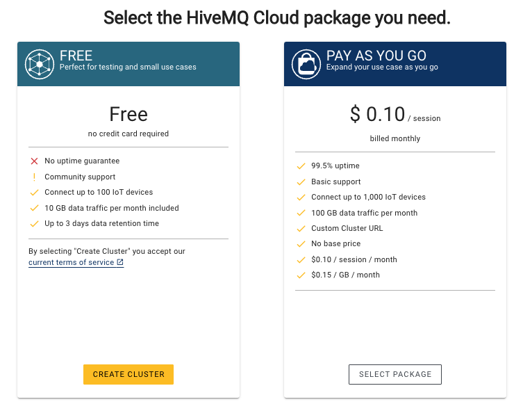

Contributors to the project:
● Fethi Azibi
● Hind Ledraa
● Imane Hamzaoui
● Mohamed El Amine Bouchoucha
Documentation code by: Imane Hamzaoui
Why MQTT
MQTT is a low network lightweight protocol based on TCP/IP, it is low on energy and advantageous especially for wireless devices it reduces the network bandwidth in communication and minimizes data packets
Description
For our summer internship project, we worked on different IoT solutions at Sirius NET. We have got to learn a lot and to practice our programming skills that we acquired at school or at clubs. This internship opened our eyes to the IoT field, with our supervisor Mr Amine Fellahi that has been a generous encyclopedia that didn‘t hesitate to share with us his years of experience in the field. Our solution is based on a BCE GPS device, it is a device that offers many functionalities such as GPS, weather data and can also be linked to other sensors such as the car‘s CAN. We worked on getting the data from the BCE device to the server and database using the MQTT protocol,and translating the payloads from their formats to human readable information.
IOT
The Internet of Things (IoT) describes the network of physical objects—“things”—that are embedded with sensors, software, and other technologies for the purpose of connecting and exchanging data with other devices and systems over the internet. These devices range from ordinary household objects to sophisticated industrial tools
MQTT
In this internship we've used an MQTT broker to guarantee the communication between our device and the server. In this part, we'll be talking about MQTT and how you can use it for your IOT solution. MQTT is a communication protocol based on tcp/ip.The first version of the protocol was authored in 1999[ 1] by Andy Stanford-Clarkfrom IBM. It was used to monitor oil pipelines within the SCADA industrial control system.[2] The goal was to have a protocol that is bandwidth-efficient, lightweight and uses little battery power, because the devices were connected via satellite link which, at that time, was extremely expensive.
How does MQTT work
In MQTT, we have a broker, subscriber and publisher.
BROKER
A broker is a piece of software running on a computer (running on-premises or in the cloud), and could be self-built or hosted by a third party. It is available in both open source and proprietary implementations. The broker acts as a post office. MQTT clients don't use a direct connection address of the intended recipient, but use the subject line called "Topic". Anyone who subscribes receives a copy of all messages for that topic. Multiple clients can subscribe to a topic from a single broker (one to many capability), and a single client can register subscriptions to topics with multiple brokers (many to one). [3]
SUBSCRIBER
A subscriber is an entity that subscribes to a specific topic on a broker.it can subscribe to many topics at the same time, a subscriber will receive all the messages sent in that topic.
PUBLISHER
A publisher is an entity that publishes,sends messages on a specific topic. The subscriber of that topic will receive it. In our case the publisher is the device because it's the one sending messages. When it comes to choosing a broker, we have many open source options.In order to get familiar with MQTT, it is recommended to start with HIVEMQ which will be explained in a later section. For our project, we used a Mosquitto broker that we installed on the server, Mosquitto will be detailed in a later section.
Quality of service
Each connection to the broker can specify a quality of service (QoS) measure. [4] These are classified in increasing order of overhead:
● At most
once the message is sent only once and the client and broker take no
additional steps to acknowledge delivery (fire and forget).
● At least
once the message is re-tried by the sender multiple times until
acknowledgement is received (acknowledged delivery).
● Exactly
once the sender and receiver engage in a two-level handshake to ensure
only one copy of the message is received (assured delivery).
This field does not affect handling of the underlying TCP data
transmissions; it is only used between MQTT senders and receivers
HiveMQ
What is HiveMQ
HiveMQ is an online MQTT broker, in which you can simplify your Iot application to only developing the client side, it offers several tools for device management, including a dashboard with real-time data displays. Role-based access can be configured and extensions are monitored. You can benefit from HiveMQ free features by following this documentation, and you can also use the business plan for larger projects.
Getting started with HiveMQ
First, go to HiveMQ cloud under Cloud in the navigation bar, and then create an account on Sign up now, you can choose to log in using your email or github. After that you will get you profile as follows: Choose the plan that suits you
Select the HiveMQ package that you want.
Choose a service provider,once you are in, it‘s time to create a cluster! Next, go to Manage Cluster and then choose Access management on the top so that you can provide a user name and a password for your cluster, it looks like this :
After that, go to Getting started, you will see multiple tools to use for your IoT applications
Websockets Client:
You can publish and subscribe using the user interface of HiveMQ, and
that‘s through the Websocket Client, here is an example of a
simple publish/subscribe scenario. The websockets client is right
here.
Click on Access the websockets client and then, on the box that
appears, click on connect. Now you are connected as a client to your
cluster.
Now let‘s publish a message !
go to the publish section and write your message, specify the topic
and the quality of the service
Write a message and pick the topic,click on publish, your message is
published now, but where to find it ?
Well, since you didn‘t do any subscription, no one will receive
it ! Let‘s now do a subscribe to a topic.
Go to the Subscriptions section and click on Add a new topic
subscription, add the topic and the Qos. Republish your message now.
Your message is successfully published now!
Note: the ‘#‘means: All topics, if you use the following specification, for example : Anytopic/#, this means that all topics under ‘AnyTopic‘ are included in the subscription.
Mosquitto
In order to implement our broker we have installed the mosquitto Broker which is an open
source developed by ECLIPSE foundation and CEDALO.
You can download it from this link.
If you are working on a ubuntu machine as in our case you can check this try this command:
sudo apt-get update
sudo apt-add-repository ppa:mosquitto-dev/mosquitto-ppa
You can find the detailed documentation right here
You can confirm if it is installed by using this command:
mosquitto status
If the result displays the mosquito‘s information details so it‘s PERFECT
Then you have to edit the configuration file.
Go to the conf file using the command :
cd /etc/mosquitto
Then open the conf file using your prefered text editor vim probably not X) We use nano because it‘s simpler.
so nano mosquitto.conf
and add this line to this file :
allow_anonymous true listener port
port : is the number of the port you want to communicate with your machine with. for example: If we write in the conf file:
listener 2200
In this example 2200 is the port which the machine will allow the mqtt mosquitto broker to use in order to communicate with other devices subscribers and publishers. Then if you want to go further you can add a username and password for each user. Which is a needed configuration for some Iot object in order to make the communication more secure. Here is a great video that will guide you : https://www.youtube.com/watch?v=IenXQvOcj54 Run
mosquitto -d
This commands runs mosquitto in the background as a daemon. All other
behavior remains the same.
And then you can do some subscribe and publish.
Communication via MQTT using mosquitto:
● For Publish:
mosquitto_pub -p PortNumber -h AdressOfYourBroker -m Message -t Topic
Example:
mosquitto_pub -p 1883 -h localhost -m "hello" -t "topic”
● For a Subscribe:
mosquitto_sub -h AdressOfYourBroker -p PortNumber -t topics
Example:
mosquitto_sub -h localhost -p 1883 -t "#”
Note : In this examples I‘m communicating with broker installed in my machine.
This project has been done under Sirius NET‘s supervision, check-out their website for their different services